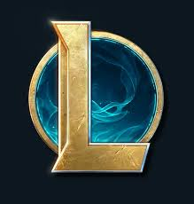

Hola!. Mi nombre es Axel y me gustan mucho los videojuegos, especialmente los competitivos, una de las cosas
que más me gustan de este tipo de videojuegos es que no solamente se pueden jugar sino tambien ver,
hoy en día existen muchas competiciones, torneos y partidas de videojuegos que son transmitidas en vivo
y millones de personas en todo el mundo se conectan a ver dichas transmiciones, es por eso que cree este blog,
para poder compartir informacion y noticias sobre partidos, jugadores, torneos videojuegos y todo lo que rodea los
esports en general los "eSports".
Que son los eSports?
Los esports, también conocidos como deportes electrónicos, son competiciones de videojuegos organizadas de manera profesional,
donde los jugadores compiten individualmente o en equipos. Estas competiciones suelen tener una estructura similar a la de los
deportes tradicionales, con torneos, ligas, equipos, patrocinadores, y espectadores que siguen las competiciones tanto en persona
como a través de transmisiones en vivo por internet.
Los esports abarcan una amplia variedad de géneros de videojuegos, como juegos de estrategia en tiempo real (RTS), juegos de disparos
en primera persona (FPS), juegos de lucha, juegos de deportes, y juegos de estrategia basados en turnos, entre otros.
Para que puedas comprender mejor de que se trata de dejo el siguiente video!.
Últimas Noticias
League of Legends
Últimas noticias sobre League of Legends
En esta parte de la página se subirán noticias relativas a League of Legends

Valorant
Últimas noticias sobre Valorant
En esta parte de la página se subirán noticias relativas a Valorant